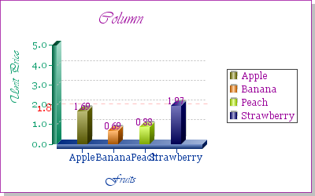
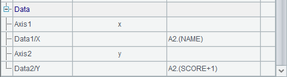
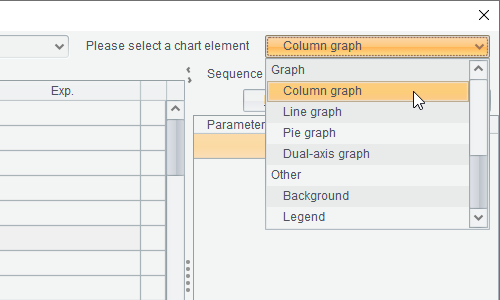

12.9.3 Alignment property
Beside the specification of coordinate point, you can also adjust the relative position between the coordinate position and the text by setting alignment property, as shown in the following plotting algorithm:
|
|
A |
|
1 |
=canvas() |
|
2 |
=A1.plot("BackGround") |
|
3 |
=A1.plot("NumericAxis","name":"x","autoCalcValueRange":false,"scaleNum":10, "xStart":0,"xEnd":1,"xPosition":1,"regionTransparent":0.5) |
|
4 |
=A1.plot("NumericAxis","name":"y","location":2,"autoCalcValueRange":false, "scaleNum":10,"yStart":1,"yEnd":0,"yPosition":0,"regionTransparent":0.5) |
|
5 |
=A1.plot("Dot","axis1":"x","data1":5,"axis2":"y","data2":5) |
|
6 |
=A1.plot("Text","text":"T1","textStyle":1,"textSize":22,"textColor":-65536,"hAlign":0,"data1":0.5,"data2":0.5) |
|
7 |
=A1.plot("Text","text":"T2","textStyle":1,"textSize":22,"textColor":-65281,"hAlign":4,"vAlign":8,"data1":0.5,"data2":0.5) |
|
8 |
=A1.plot("Text","text":"T3","textStyle":1,"textSize":22,"textColor":-16776961,"hAlign":4,"vAlign":32,"data1":0.5,"data2":0.5) |
|
9 |
=A1.plot("Text","text":"T4","textStyle":1,"textSize":22,"vAlign":8,"data1":0.5,"data2":0.5) |
|
10 |
=A1.draw@p(300,200) |
Still, four texts T1, T2, T3 and T4 are plotted, with each of the physical coordinates for them set as 0.5, that is, the specified coordinate point is the center of the canvas, where a referential dot is plotted. Moreover, the font size is increased and boldface type is used to create a clearer view. And different alignment properties and different colors are set for them.
 
 
Then the plotting result is:

It can be seen how the alignment property works. Though the four text elements are defined with the same coordinate point, which is the center of the canvas, the result is that for T1, the coordinate point is situated on the middle left; for T2, it is on the top right; for T3, it is on the bottom right and for T4, it is on the top middle. These are in consistent with the settings of the alignment property for them.